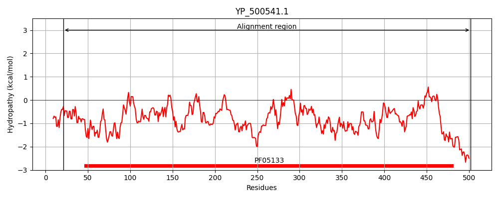
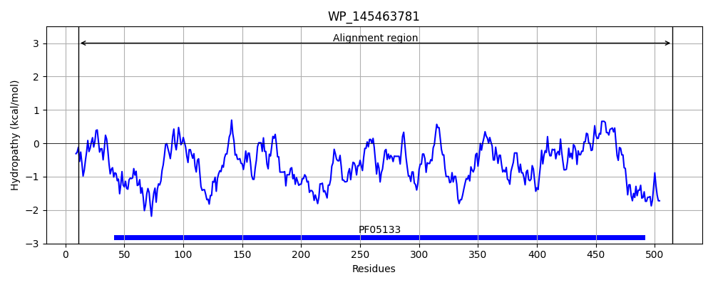
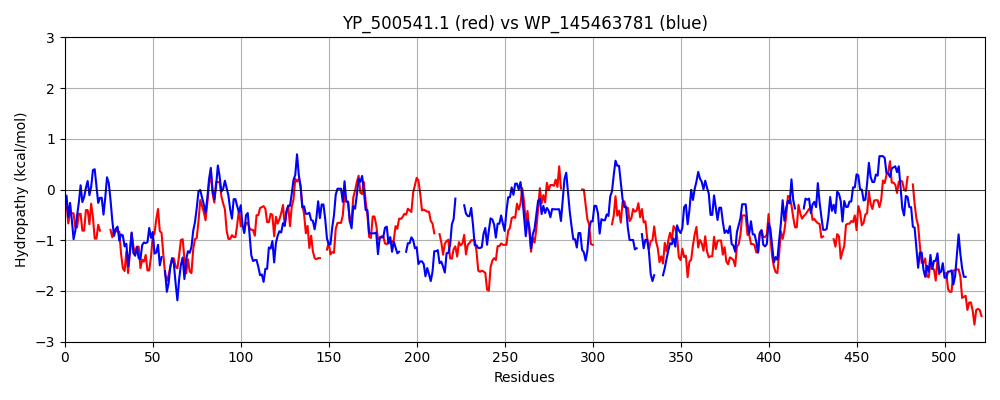

Hit Accession: WP_145463781
Hit TCID: 1.W.7.1.3
Hit Description: gnl|BL_ORD_ID|21932 gnl|TC-DB|WP_145463781.1|1.W.7.1.3 phage portal protein [Weissella cibaria]
Mach Len: 523
e:0.000000
Query TMS Count : 0
Hit TMS Count: 0
TMS-Overlap Score: 0.000000
Predicted Substrates:None
BLAST Alignment:
Score: 632 , Bit scores: 248 bits, E-value: 5.0e-76, Alignment length: 523, Percentage identity: 33
Query: 21 FNDEANVVYTYDGTESDLLQN-----VNEVSKYIEHHMDYQRPRLKVLSDYYEGKTKNLVELTRRKEEYMADNRVAHDYASYISDFINGYFLGNPIQYQDD-DKDVLEVIEAFNDLNDVESHNRSLGLDLSIYGKAYELMIRNQDD---ETRLYKSDAMSTFVIYDNTIERNSIAGVRYLRTKPIDKTDEDEVFTVDLFTSHGVYRYLTSR--TNGLKLTPRENGFESHSFERMPITEFSNNERRKGDYEKVITLIDLYDNAESDTANYMSDLNDAMLLIKGN-----------LNLDPVE----------VRKQKEANVLFLEPTVYADSEGRETEGSVDGGYIYKQYDVQGTEAYKDRLNSDIHMFTNTPNMKDDNFSGTQSGEAMKYKLFGLEQRTKTKEGLFTKGLRRRAKLLETILKNTWSIDANKD-----FNTVRYVYNRNLPKSLIEELKAYIDSGGKISQTTLMSLFSFFQ--DPELEVKKIEEDEKES--IKKAQKGIYKDPRDINDDEQDDD 502
FN AN V+ + + ++ +N++ +++ H Q RLK L YY ++ + ++ ADNR+A D+A YI+ F Y LG P+ Y++ D + E I+ F+ N+ HN + DLSIYG+AYEL+ + D+ + RL + + FV+YD+T++RNS+ VRY R + + D V+++T+ VY Y G+K +H F +P+TE+++NE R G YE V+ ID YD A+S+ AN D N+A+L+IKGN ++ D E V + K+A +L ++ D G E D Y+ K YD GT+AY DRL DI FT TP+ D NFSG QSGEAMKYKL + R T+E LF +GL RR +L N W I N N ++ N+P+++ E + G +S TL+ L F D + E+K++E+ + ++ + Q Y +P E D+
Sbjct: 11 FNPSANDVFFMNADDYAIMDPAAEGFINQLDRFVNRHKSSQVKRLKALKRYYLADN-DIRYKEPKSDKTAADNRIASDFARYITIFEQSYMLGKPVVYKNAADTTLQEEIDDFSKQNNESYHNVLIKTDLSIYGRAYELLYVDGDENNVQVRLARLNPEQVFVVYDDTVQRNSLFAVRYYRVRYEEGKFRD---FVEVYTNDKVYYYRNDNQEAGGMKFVEET----THEFNGVPVTEYASNEDRTGAYEAVLDTIDAYDLAQSELANTQEDFNNALLMIKGNPFTGSDDNPVIVDDDGKEMPNPNFIGNVVAQMKQARLLIMDDN--PDENGAEP----DAEYLTKTYDSAGTKAYIDRLVGDILRFTFTPDTSDQNFSGVQSGEAMKYKLMAADNRRVTQERLFERGLMRRLRL----AVNVWRIKGNSSVNYDAINDTEILFTPNIPQNVNELIANVKSLYGIVSDETLLELLKQFTGVDADEELKRLEKQKADNQLMFNGQTNDYPNPDQEGVIEDGDE 515 | Protein Hydropathy Plots: |
|---|
|  |  |
Pairwise Alignment-Hydropathy Plot:
|
|---|
|  |